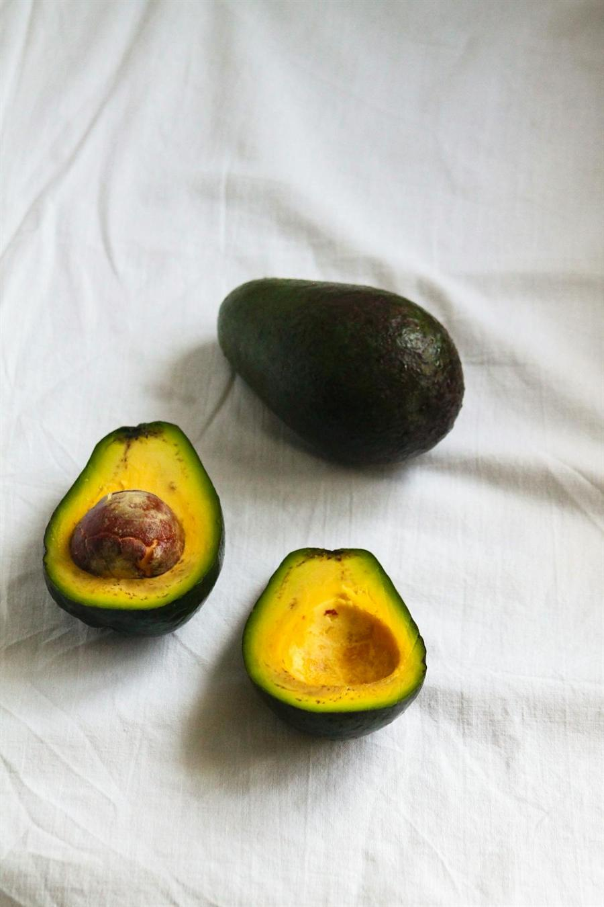

Avocado
Quick answer
Avocados provide oleic acid (the same monounsaturated fat found in olive oil), glutathione (a key intracellular antioxidant), and potassium in amounts that exceed most other fruits. Their unique fat-soluble nutrient profile enhances the absorption of carotenoids from other foods eaten in the same meal.
What it is
Avocado (Persea americana) is a fruit native to Central Mexico, now grown commercially in Mexico, California, Peru, Chile, and many tropical and subtropical regions. The Hass variety accounts for about 80% of global consumption. Avocados are available fresh year-round in most markets.
Avocados are used in guacamole, sliced on toast, added to salads and bowls, blended into smoothies, and used as a fat source in vegan baking. They are unique among fruits for their high fat content (mostly monounsaturated) and creamy texture.
Why avocado may support an anti-inflammatory diet
Avocados are rich in oleic acid, which makes up about 63% of their total fat. Oleic acid has been associated with reduced levels of CRP and IL-6 in observational studies, and is a key component of the Mediterranean dietary pattern. The fat content of avocados also enhances absorption of fat-soluble nutrients from other foods.
Avocados contain glutathione, a tripeptide that serves as one of the body's primary intracellular antioxidants. They also provide lutein and zeaxanthin (carotenoids important for eye health), phytosterols (which may modulate cholesterol absorption), and potassium (more per serving than bananas).
Key nutrients and compounds
A 100g serving of avocado provides approximately 15g total fat (10g monounsaturated), 485mg potassium (10% DV), 7g fiber, 2g protein, 81mcg folate (20% DV), 2.1mg vitamin E (14% DV), and 21mcg vitamin K (18% DV). One medium avocado (about 150g) contains roughly 240 calories.
Potential health benefits
- Rich in oleic acid, the same anti-inflammatory monounsaturated fat found in olive oil
- Enhances absorption of fat-soluble carotenoids from other foods in the same meal
- Provides more potassium per serving than bananas
- Contains glutathione, a key intracellular antioxidant
- High fiber content supports gut health and satiety
How to eat avocado
- Spread mashed avocado on whole-grain toast with olive oil and seeds
- Add sliced avocado to salads, grain bowls, and tacos
- Blend half an avocado into smoothies for creaminess and healthy fat
- Make guacamole with lime, cilantro, tomato, and onion
- Use avocado as a fat replacement in baking (brownies, muffins)
- Top soups and chili with diced avocado for added nutrition
Shopping and storage
Buy avocados slightly firm and let them ripen at room temperature for 2-4 days. To speed ripening, place in a paper bag with a banana. Once ripe, refrigerate to extend life by 2-3 days. Squeeze lemon or lime juice on cut surfaces to slow browning.
FAQ
Are avocados too high in fat?
Avocados are high in monounsaturated fat, which is associated with cardiovascular benefits in research. The fat content supports satiety and nutrient absorption. For most people, half to one avocado per day fits well within a balanced diet.
Is avocado good for inflammation?
Avocados provide oleic acid, fiber, potassium, and antioxidants that are associated with lower inflammatory markers in observational studies. A 2013 NHANES analysis found that avocado consumers had lower CRP levels, though this may reflect overall diet quality.
How do I know when an avocado is ripe?
A ripe avocado yields slightly to gentle pressure and the stem nub pops off easily, revealing green underneath. If it reveals brown, the avocado may be overripe. Color alone is not a reliable indicator for all varieties.
Can I eat avocado every day?
Yes. Daily avocado consumption has been studied in clinical trials (including the Habitual Diet and Avocado Trial) and is generally associated with favorable effects on diet quality and lipid profiles.
Evidence note
The Habitual Diet and Avocado Trial (HAT), a large randomized controlled trial, found that eating one avocado per day for 6 months improved overall diet quality. Observational data from NHANES has associated avocado consumption with lower CRP levels and better nutrient intake profiles.
This page describes avocado as a supportive food within a broader anti-inflammatory eating pattern, not as a standalone medical treatment.